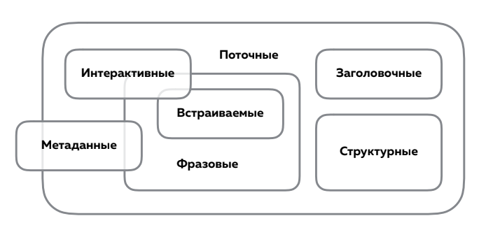
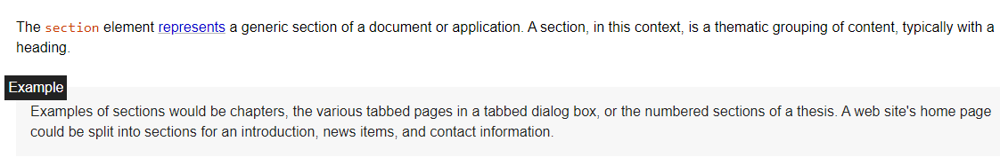
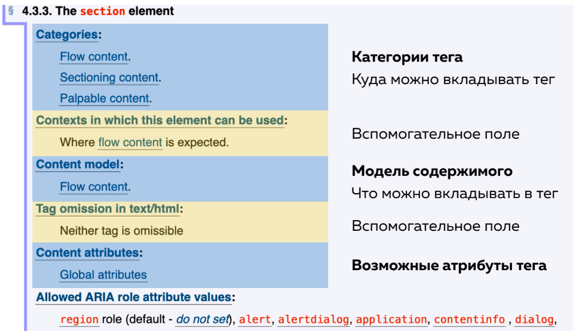

Модель содержимого HTML5
Контентная модель (content model), или модель содержимого, описывает, какой тип содержимого следует ожидать внутри элемента и какие элементы могут быть вложены в другие элементы. Большинство элементов принадлежат одной категории или нескольким категориям одновременно.
Категории контента
Каждый элемент HTML принадлежит некоторому количеству категорий контента, которые объединяют элементы с общим набором характеристик. Такая группировка является свободной, то есть не задаёт на самом деле отношение между элементами таких типов, но помогает определить и описать их поведение и правила, которым они должны следовать, особенно когда дело доходит до сложных деталей. Также возможна ситуация, когда элемент не входит ни в одну из этих категорий.
Существует три типа категорий контента:
- Основные категории контента, описывающие общие для многих элементов правила;
- Категории контента для элементов форм, описывающие общие правила для элементов форм;
- Особые категории контента, описывающие редкие категории, актуальные только для нескольких элементов, возможно, лишь в особом контексте. Такие элементы имеют уникальные требования и не вписываются в какую-либо конкретную категорию.
Основные категории контента
- Метаданные: данные для браузеров, поисковиков и так далее (всё, что в <head>).
- Потоковые элементы: контент (всё, что в <body>).
- Структурные ( секционные ) элементы: крупные смысловые разделы документа.
- Заголовочные элементы: заголовки.
- Фразовые элементы: текст документа и мелкие текстовые элементы в абзацах.
- Встраиваемые элементы: изображения, видео, аудио и так далее.
- Интерактивные элементы: то, с чем взаимодействует пользователь.
Секционные, заголовочные, фразовые, встроенные и интерактивные элементы относятся к потоковым элементам. Метаданные иногда могут относиться к потоковым элементам. Метаданные и интерактивные элементы иногда относятся к фразовым элементам. Встроенные элементы также относится к фразовым элементам, но часть элементов также является интерактивными.
Старые «блочные» и «строчные»
-
Строчные элементы из HTML4 -
a, b, big, br, em, i, img, small, span, strong, sub, sup -
Блочные элементы из HTML4 -
blockquote, div, h1, h2, h3, h4, h5, h6, hr, p, pre
И, хотя, такая модель уже не используется и блочность-строчность задается при помощи стилей, все-таки следует помнить, что указанные элементы все-равно, по умолчанию, обладают блочными и строчными свойствами:
- Блочные элементы характеризуются тем, что занимают всю доступную ширину, высота элемента определяется его содержимым, и он всегда начинается с новой строки.
- Ширина строчных элементов равна их содержимому плюс значения отступов, полей и границ.
Метаданные ( Metadata content )
К мета содержимому относятся элементы, которые содержат информацию о HTML-документе, устанавливают взаимосвязь HTML-документа с другими документами (например, таблицами стилей css), отвечают за внешний вид или поведение контента на странице. Элементы из другого пространства имён, чей смысл связан с метаданными, также относятся к мета содержимому.
base, link, meta, noscript, script, style, template, title
Потоковые элементы ( Flow content )
К этому типу содержимого относится большинство элементов, используемых в теле документа или веб-приложения. Обычно содержат текст и встроенный контент.
a, abbr, address, article, aside, audio, b, bdi, bdo, blockquote, br, button, canvas, cite, code, data, datalist, del, details, dfn, div, dl, em, embed, fieldset, figure, footer, form, h1, h2, h3, h4, h5, h6, header, hgroup, hr, i, iframe, img, input, ins, kbd, label, main, map, mark, math, menu, meter, nav, noscript, object, ol, p, pre, progress, q, ruby, s, samp, script, section, select, small, span, strong, sub, sup, svg, table, template, textarea, time, ul, var, video, wbr и Текст.
Несколько других элементов, которые тоже принадлежат к этому типу, но требуют определённых условий:
-
areaтолько внутри элемента <map> -
linkпри наличии атрибута itemprop -
metaпри наличии атрибута itemprop -
styleпри наличии атрибута <scoped>
Структурные ( секционные ) элементы ( Sectioning content )
Подобные элементы создают секции (блоки) в текущей структуре документа, определяющие область действия заголовочного контента и элементов <header> и <footer>. Каждый элемент секционного содержимого потенциально имеет заголовок и схему (outline).
article, aside, nav, section
Заголовочные элементы ( Heading content )
Заголовочный контент задаёт заголовок секции, явно отмеченной структурным элементом или неявно – самим заголовочным.
h1, h2, h3, h4, h5, h6
Элемент <header> сам по себе не является заголовочным, хотя с большой вероятностью содержит контент такого типа.
Фразовые элементы ( Phrasing content )
Фразовые элементы представлены элементами для разметки текста внутри абзацев. Фразовый контент определяет текст и его формат. Серии фразового контента образуют параграфы. Большинство элементов, принадлежащих категории фразовых, могут содержать только элементы из своей категории, а не любые элементы из категории потокового содержимого.
abbr, audio, b, bdo, br, button, canvas, cite, code, data, datalist, dfn, em, embed, i, iframe, img, input, kbd, label, mark, math, meter, noscript, object, output, progress, q, ruby, samp, script, select, small, span, strong, sub, sup, svg, textarea, time, var, video, wbr, и обычный текст (не только состоящий из символов пробелов).
Ещё несколько элементов входят в данную категорию при соблюдении особых условий:
-
aесли содержит в себе только фразовый контент -
areaтолько внутри элемента <map> -
delесли содержит в себе только фразовый контент -
insесли содержит в себе только фразовый контент -
linkпри наличии атрибута itemprop -
mapесли содержит в себе только фразовый контент -
metaпри наличии атрибута itemprop
Встраиваемые элементы ( Embedded content )
Встраиваемые элементы — элементы, которые импортируются в документ из других источников или вставляют содержимое на другом языке разметки или принадлежащее другому пространству имён.
audio, canvas, embed, iframe, img, math, object, svg, video
Интерактивные элементы ( Interactive content )
К интерактивнsv относятся элементы, которыt специально разработаны для взаимодействия с пользователем.
a, button, details, embed, iframe, label, select, textarea
Некоторые элементы считаются интерактивным контентом только при соблюдении определённых условий:
-
audioесли указан атрибут controls -
imgесли указан атрибут usemap -
inputесли атрибут type не скрыт -
menuесли атрибут type имеет значение toolbar -
objectесли указан атрибут usemap -
videoесли указан атрибут controls
Атрибут tabindex, также может сделать любой элемент интерактивным.
Контент форм
Контент форм включает в себя элементы, у которых есть владелец формы, обозначенный атрибутом form. Владельцем формы является либо элемент form, либо элемент, id которого указан в атрибуте form.
button, fieldset, input, label, meter, object, output, progress, select, textarea
Данная категория включает несколько подкатегорий:
- listed
-
Элементы, перечисленные в IDL коллекциях form.elements и fieldset.elements.
Включаютbutton, fieldset, input, object, output, select, textarea. - labelable
-
Элементы, которые могут ассоциироваться с элементами
label
Включаютbutton, input, meter, output, progress, select, textarea. - submittable
-
Элементы, которые могут использоваться для построения набора данных формы при отправке на сервер.
Включаютbutton, input, object, select, textarea. - resettable
-
Элементы, которые могут быть затронуты при сбросе данных формы.
Включаютinput, output, select, textarea.
Дополнительные категории содержимого
Явный контент
Контент считается явным, когда он не скрыт и не является пустым, это контент, который отображён и предметен. У элементов потокового или фразового контента должен быть хотя бы один явный узел и для него не задан атрибут hidden. Явное содержимое делает элемент непустым. Это обеспечивается тем, что элемент содержит потомка с текстом или каким-либо содержимым, которое пользователь может слышать (элемент audio), видеть (элемент canvas, img или video) или каким-либо образом взаимодействовать с ним (интерактивные элементы форм).
Это требование не является жёстким, так как в некоторых случаях элемент может быть пустым по очевидным причинам (например, он в последствии будет наполняться с помощью скрипта).
Элементы поддержки скриптов
Элементы поддержки скриптов – это элементы, которые напрямую не влияют на отрисовку документа. Вместо этого они служат для внедрения скриптов, путём либо содержания кода скрипта напрямую, либо указания данных, которые будут использованы скриптами.
script, template
Корень задания разделов
Кроме секционного содержимого есть несколько элементов, являющихся коренем задания разделов. Они выделены из секционных элементов, но также могут иметь собственную структуру заголовков, а разделы и заголовки внутри этих элементов не взаимодействуют со структурой заголовков их родителей.
blockquote, body, details, dialog, fieldset, figure, td
Прозрачная модель содержимого
Некоторые элементы имеют прозрачную модель содержимого. Это означает, что тип ожидаемого содержимого наследуется от их родительского элемента. Дополнительно к собственному разрешенному контенту они могут содержать любой контент, который допустим для их родительского элемента.
Если такой элемент не имеет родительского элемента, то его прозрачная модель контента должна рассматриваться как ожидающая любое содержимое из категории потокового содержимого.
Если элемент обладает прозрачной моделью контента, его содержимое должно быть структурировано таким образом, чтобы оно оставалось валидным HTML5, даже при удалении прозрачного элемента или заменой его на дочерние элементы.
Например, элементы <del> и <ins> являются прозрачными:
<p>Мы почитаем следующие истины <del><em>священными #amp; неоспоримыми</em></del> <ins>само собой разумеющимися</ins>.</p>
Если удалить эти элементы, данный фрагмент всё равно будет представлять собой валидный HTML.
<p>Мы почитаем следующие истины <em>священными #amp; неоспоримыми</em> само собой разумеющимися.</p>
HTML Standard
Теперь, имея представление о модели содержимого, мы можем понимать описание каждого элемента в спецификации HTML Standard
Например, открыв раздел элемента section, получаем метаданные элемента:
- куда можно вкладывать тег
- что можно вкладывать в тег
- какие атрибуты есть у тега
- информация о доступности
- информация для программистов
- вспомогательные данные

А также, описание элемента: что обозначает этот тег и примеры использования.
Уже сейчас нужно привыкать пользоваться этой спецификацией в рамках тех знаний, которые имеются. На что мы можем на данном уровне обращать внимание:
Можно ли <x> вложить в <y>?
Практика
Алгоритм работы
- Проверяем контентную модель родительского тега
- Проверяем категории дочернего тега
- Если категория и ограничения не запрещают, то вкладывать можно.